רכיבים קשירים היטב (Strongly Connected Components)
⏱ זמן משוער: 55 דק'
0. אינטואיציה — מה מחפשים ולמה זה מעניין
בגרף לא מכוון "רכיב קשירות" הוא פשוט: קבוצת קדקודים שאפשר להגיע מכל אחד לכל אחד. אבל בגרף מכוון (digraph) הקשתות הן חד-כיווניות, ולכן "יש דרך מ-u ל-v" אינו מבטיח שיש דרך חזרה מ-v ל-u. השאלה הטבעית: אילו קבוצות קדקודים "לכודות יחד" במובן שמכל אחת אפשר להגיע לכל אחת ובחזרה? אלו הם ה-רכיבים הקשירים היטב (SCC).
אינטואיטיבית, כל מעגל מכוון בגרף כולו נמצא בתוך אותו SCC (כי מעגל נותן דרך הלוך-ושוב בין כל שני קדקודים שעליו), ושני קדקודים נמצאים באותו SCC בדיוק כאשר הם שוכבים יחד על מעגל מכוון כלשהו. אם "נכווץ" כל SCC לנקודה אחת, מקבלים גרף חדש — גרף הרכיבים (condensation) — שהוא תמיד DAG (גרף מכוון חסר מעגלים). זהו כלי מבני חזק: הוא הופך כל גרף מכוון ל"שלד" בלי מעגלים, ומאפשר להריץ עליו טכניקות של גרפים אציקליים.
מקור: strongly-connected-components.pdf (עמ' 1–2), lec-scc.pdf (עמ' 1–2)
1. הגדרות פורמליות
1.1 רכיב קשיר היטב (SCC)
ההגדרה כפי שנכתבה בהרצאה, בשתי הגרסאות:
הגרסה האנגלית של המרצה (strongly-connected-components.pdf עמ' 1) זהה במהות:
Definition: A strongly connected component of a digraph G = (V, E) is a maximal set of vertices U ⊆ V such that for every pair of vertices u, v ∈ U, there exists a (directed) path from both u to v (u → v) and from v to u (v → u).
שתי מילות מפתח: הגרף מכוון, והקבוצה מקסימלית — כלומר לא ניתן להוסיף לה אף קדקוד נוסף מבלי להפר את תכונת הקשירות ההדדית. הסימון ⤳ (חץ מפותל) פירושו "קיים מסלול מכוון"; ⤳̸ פירושו "אין מסלול".
1.2 הגרף המשוחלף (Transpose) GT
תכונה מרכזית שמשמשת בהוכחת הנכונות: אם t ⤳ u ב-GT אז u ⤳ t ב-G. שימו לב שהיפוך הקשתות אינו משנה את ה-SCC-ים: אם היה מסלול הלוך-ושוב בין u ל-v ב-G, הוא קיים גם ב-GT (פשוט בכיוון הפוך). לכן ל-G ול-GT יש בדיוק אותם רכיבים קשירים היטב — עובדה שהאלגוריתם מנצל.
1.3 סימוני DFS שנשתמש בהם
- d[v] = זמן גילוי של v ב-DFS (הצביעה לאפור).
- f[v] = זמן סיום של v (הצביעה לשחור).
- π[u] / Π[u] = ההורה של u ב-יער ה-DFS; Π[u]=NIL ⇔ u הוא שורש עץ.
- מבנה הסוגריים (Parenthesis Structure) — יחסי ההכלה בין הקטעים [d[v], f[v]].
מקור: strongly-connected-components.pdf (עמ' 1), lec-scc.pdf (עמ' 2), hw-1.pdf (שאלה 2)
2. הדוגמה המרכזית — הגרף G
לאורך כל האשכול נעבוד עם גרף אחד קבוע: 8 קדקודים בשתי שורות. בגרסה האנגלית של המרצה הם באותיות קטנות a..h; בגרסה העברית באותיות גדולות A..H — זהו אותו גרף בדיוק. נשתמש כאן ב-A..H:
- שורה עליונה (משמאל לימין): A, B, C, D
- שורה תחתונה (מתחתן בהתאמה): E, F, G, H
הקשתות המכוונות של G (בדיוק לפי התרשים ב-lec-scc):
A → B B → C , B → E , B → F E → A , E → F C → D , D → C (זוג דו-כיווני) C → G D → H F → G , G → F (זוג דו-כיווני) G → H H → H (self-loop)
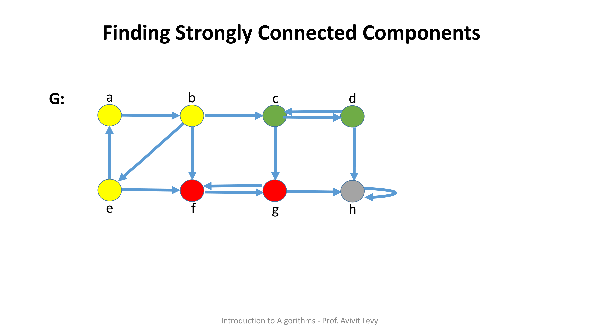
התוצאה שאליה נגיע (ונוכיח): ל-G יש בדיוק 4 רכיבים קשירים היטב — {A, B, E}, {C, D}, {F, G}, ו-{H} (רכיב יחיד עם self-loop). שימו לב: {A,B,E} הם מעגל A→B→E→A; {C,D} ו-{F,G} הם זוגות דו-כיווניים.
מקור: strongly-connected-components.pdf (עמ' 2–3), lec-scc.pdf (עמ' 2–4)
3. האלגוריתם SCC(G) — שני מעברי DFS וטרנספוז
הרעיון: מעבר DFS ראשון על G קובע "סדר חשיבות" של הקדקודים לפי זמני הסיום f. לאחר מכן הופכים את הגרף ל-GT, ומריצים DFS שני — אך לא בסדר שרירותי, אלא לפי סדר יורד של f. כל עץ שמתקבל ביער ה-DFS השני הוא SCC שלם. זהו אלגוריתם Kosaraju (הגרסה של CLRS); שם האלגוריתם עצמו אינו מוזכר בשקפים — רק "SCC(G)".
3.1 הפסאודו-קוד (מילה-במילה)
גרסת המרצה האנגלית (4 צעדים), strongly-connected-components.pdf עמ' 4:
SCC(G) 1. DFS(G) 2. G^T = ComputeTranspose(G) (sort V by decreasing f values) 3. DFS(G^T) 4. OutputForest(G^T)
הגרסה העברית (עמ' 2) מפרקת את המיון לצעד נפרד — 5 צעדים, זהה במהות:
SCC(G) 1. DFS(G) 2. G^T = ComputeTranspose(G) 3. Sort(V, f, decrease) 4. DFS(G^T) 5. Output
3.2 הסבר שורה-אחר-שורה
- DFS(G) — מריצים DFS על הגרף המקורי כדי לחשב את זמן הסיום f[v] לכל קדקוד. רק ערכי ה-f מעניינים אותנו בהמשך.
- ComputeTranspose(G) — בונים את גרף הטרנספוז GT על-ידי היפוך כיוון כל הקשתות.
- Sort(V, f, decrease) — ממיינים את קדקודי V בסדר יורד של f (מהמעבר הראשון). סדר זה קובע את סדר בחירת השורשים ב-DFS השני.
- DFS(G^T) — DFS על הטרנספוז, כאשר הלולאה הראשית עוברת על הקדקודים בסדר f היורד.
- Output / OutputForest(G^T) — כל עץ ביער ה-DFS של GT הוא SCC נפרד.
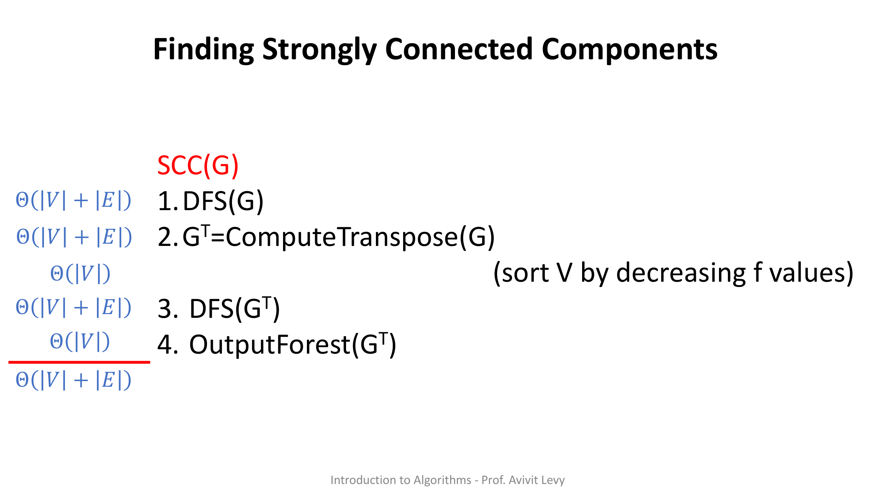
מקור: strongly-connected-components.pdf (עמ' 4–5), lec-scc.pdf (עמ' 2)
4. הרצה מלאה (Trace) על גרף הדוגמה
זהו ה-trace המלא של המרצה על G, שלב אחר שלב. עקבו אחר ערכי ה-d/f — הם הלב של האלגוריתם.
4.1 מעבר ראשון: DFS(G)
מריצים DFS על G. השורש שנבחר בפועל בהרצה הוא C (d=1, מסומן בעיגול טורקיז). התוצאה בפורמט d/f:
| קדקוד | A | B | C | D | E | F | G | H |
|---|---|---|---|---|---|---|---|---|
| d/f | 13/14 | 11/16 | 1/10 | 8/9 | 12/15 | 3/4 | 2/7 | 5/6 |
זמני הסיום: A=14, B=16, C=10, D=9, E=15, F=4, G=7, H=6. מכאן הסדר היורד לפי f (סדר בחירת השורשים ל-DFS השני):
B(16) > E(15) > A(14) > C(10) > D(9) > G(7) > H(6) > F(4)
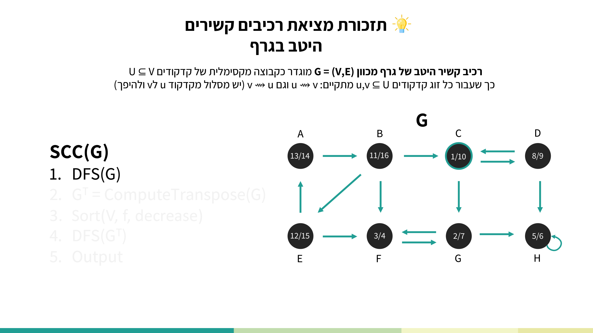
4.2 מעבר שני: DFS(GT) בסדר f יורד
בונים את GT (כל הקשתות הפוכות): B→A, C→B, E→B, A→E, F→B, D→C, C→D, G→C, H→D, F→E, G→F, F→G, H→G, H→H. מריצים DFS מ-B (בעל ה-f הגבוה ביותר). התוצאה בפורמט d/f של המעבר השני:
| קדקוד | A | B | C | D | E | F | G | H |
|---|---|---|---|---|---|---|---|---|
| d/f | 2/5 | 1/6 | 7/10 | 8/9 | 3/4 | 12/13 | 11/14 | 15/16 |
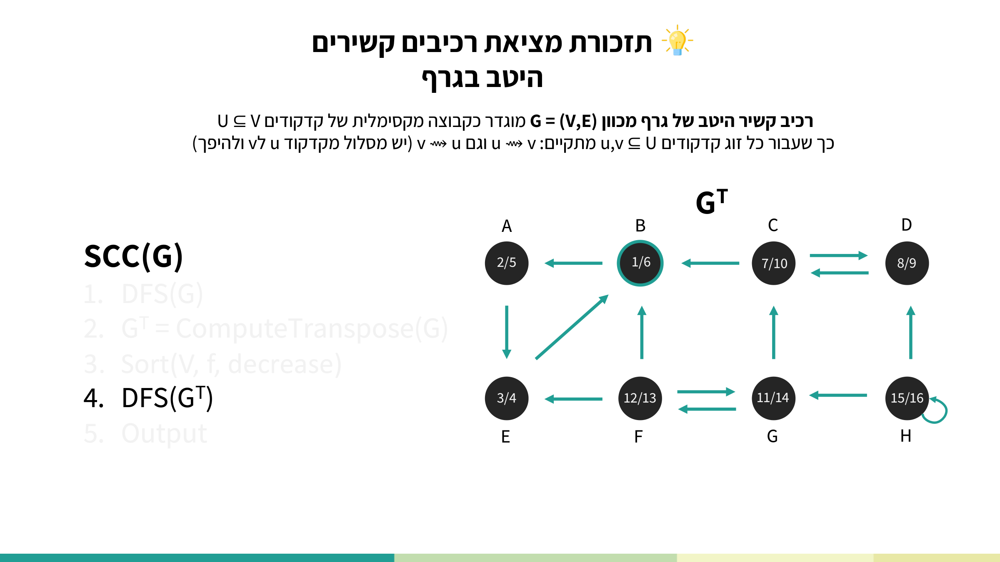
4.3 הפלט — ארבעת ה-SCC-ים
כל עץ ביער ה-DFS של GT הוא SCC. מקבלים בדיוק:
- {A, B, E} — צהוב
- {C, D} — ירוק
- {F, G} — אדום
- {H} — אפור (רכיב יחיד עם self-loop)
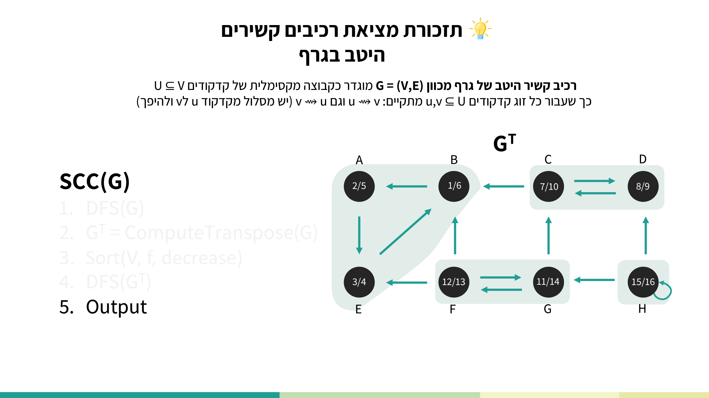
מקור: lec-scc.pdf (עמ' 3–7), strongly-connected-components.pdf (עמ' 3)
5. ניתוח סיבוכיות
הפירוק שלב-אחר-שלב (strongly-connected-components.pdf עמ' 5, מילה-במילה):
Θ(|V|+|E|) 1. DFS(G) Θ(|V|+|E|) 2. G^T = ComputeTranspose(G) Θ(|V|) (sort V by decreasing f values) Θ(|V|+|E|) 3. DFS(G^T) Θ(|V|) 4. OutputForest(G^T) ————————————————— Θ(|V|+|E|) TOTAL
מקור: strongly-connected-components.pdf (עמ' 5)
6. הוכחת נכונות
יהי T עץ ביער ה-DFS של GT, ויהי t ∈ T השורש שלו. לפי הגדרת SCC צריך להראות שני דברים: (1) קשירות הדדית — לכל u,v ∈ T מתקיים u ⤳ v וגם v ⤳ u ב-G; (2) T מקסימלי.
6.1 חלק (1) — קשירות הדדית
מספיק להראות שלכל u ∈ T מתקיים u ⤳ t וגם t ⤳ u ב-G (כי אז u ⤳ t ⤳ v ולהיפך).
- כיוון u ⤳ t: מכיוון ש-T עץ ב-DFS של GT, t שורשו ו-u צומת בו, יש t ⤳ u ב-GT. לפי הגדרת הטרנספוז נובע u ⤳ t ב-G. ✓
- כיוון t ⤳ u: משתמשים ב-מבנה הסוגריים על DFS(G) (המעבר הראשון). לשני קדקודים t, u יש בדיוק 4 אפשרויות:
(1) d[t] ≤ d[u] ≤ f[u] ≤ f[t] ⇒ u is a descendant of t (2) d[u] ≤ d[t] ≤ f[t] ≤ f[u] ⇒ t is a descendant of u (3) d[t] ≤ f[t] ≤ d[u] ≤ f[u] ⇒ no path from t to u (4) d[u] ≤ f[u] ≤ d[t] ≤ f[t] ⇒ no path from u to t
אנו יודעים ש-f[t] > f[u] (כי t נבחר כשורש T, כלומר הופיע לפני u ברשימה הממוינת לפי f יורד), וגם ש-u ⤳ t ב-G. אפשרויות (3) ו-(4) נופלות כי יש מסלול, אפשרות (2) נופלת כי f[t] > f[u] — נשארת רק אפשרות (1): u הוא צאצא של t בעץ DFS(G), ולכן t ⤳ u ב-G. ✓
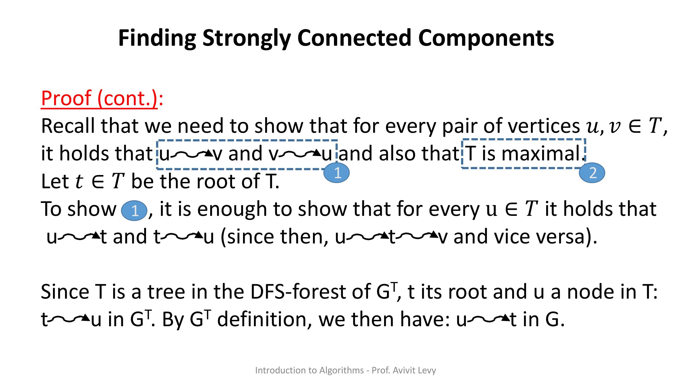
6.2 חלק (2) — מקסימליות של T
מראים שלכל v ∉ T מתקיים v ⤳̸ t או t ⤳̸ v. יהי v ∉ T; הוא שייך לעץ אחר T′ ביער ה-DFS של GT.
- אם T′ פלט לפני T: מכיוון ש-t התגלה כשורש T רק אחר כך, חייב להתקיים v ⤳̸ t.
- אם T′ פלט אחרי T: מכיוון ש-v התגלה כצומת ב-T′ רק אחר כך, חייב להתקיים t ⤳̸ v.
לכן אף קדקוד מחוץ ל-T לא יכול להתווסף אליו — T מקסימלי. ∎
מקור: strongly-connected-components.pdf (עמ' 6–19)
7. גרף הרכיבים (Condensation) — ותכונת ה-DAG
עבור גרף הדוגמה שלנו, גרף הרכיבים הוא:
- קדקודים: ABE, CD, FG, H (אחד לכל SCC).
- קשתות: ABE→CD, ABE→FG, CD→FG, CD→H, FG→H.
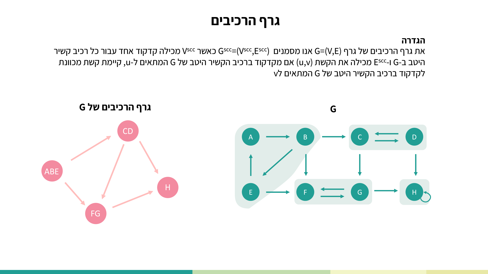
שימו לב שאין ב-Gscc אף מעגל — הוא DAG. זו אינה מקריות: גרף רכיבים הוא תמיד DAG (נוכיח זאת בתרגיל 1). ההמחשה: אילו הייתה קשת שסוגרת מעגל בגרף הרכיבים (למשל CD → ABE), הרכיבים המעורבים היו למעשה מתמזגים ל-SCC אחד גדול — בסתירה למקסימליות.
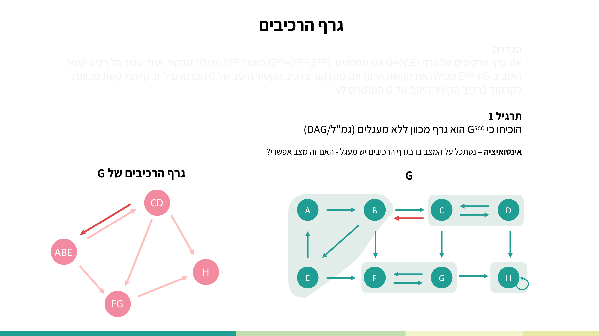
מקור: lec-scc.pdf (עמ' 8–10)
8. למה חייבים GT וסדר f יורד? הדוגמה הנגדית של פרופ' דיוור
זו נקודת מבחן קלאסית (שאלה 2 בתרגול). פרופ' דיוור טוען שאפשר "לפשט" את האלגוריתם: להריץ את ה-DFS השני על הגרף המקורי (ולא על GT), ולסרוק את הקדקודים בסדר עולה של זמני הסיום f. הפרופסור טועה.
דוגמה נגדית קטנה על שלושה קדקודים: A ⇄ B (קשת דו-כיוונית) ו-A → C. הרכיבים האמיתיים הם {A,B} ו-{C} — נפרדים.
- DFS ראשון: B: 2/3, C: 4/5, A: 1/6.
- DFS שני "השגוי" (על הגרף המקורי, בסדר f עולה — מתחיל מ-B): B: 1/6, C: 3/4, A: 2/5.
התוצאה: כל שלושת הקדקודים נופלים לאותו עץ, והשיטה השגויה מכריזה שכולם באותו SCC — אך זה שגוי (C אינו שייך ל-{A,B}). זו בדיוק הסיבה שהאלגוריתם הנכון דורש גם את הטרנספוז וגם את הסדר היורד.
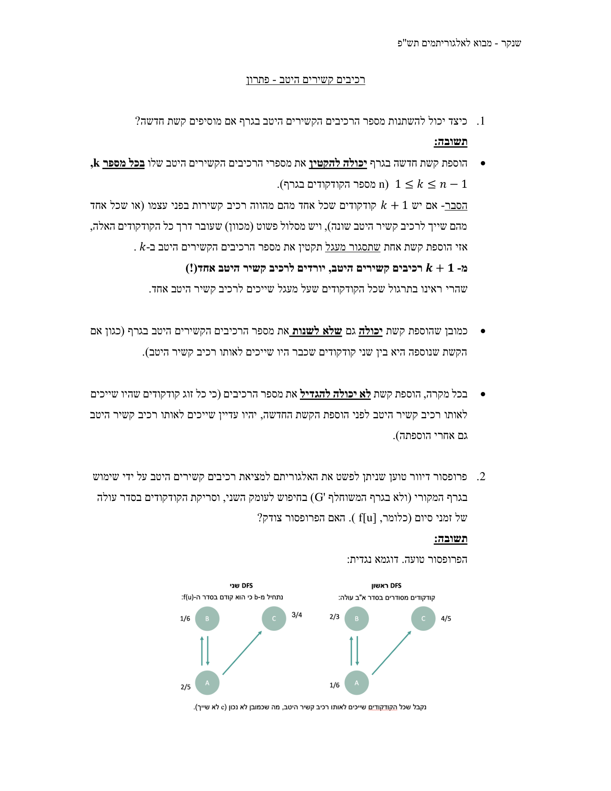
🎓 הרחבה — לא נדרש למבחן: אלגוריתם Tarjan (מעבר יחיד)
האלגוריתם הנלמד בקורס הוא Kosaraju (שני מעברי DFS + טרנספוז). קיים אלגוריתם חלופי מפורסם, Tarjan, שמוצא את כל ה-SCC-ים ב-מעבר DFS יחיד בעזרת ערכי low-link ומחסנית — בלי לבנות את הגרף המשוחלף. הסיבוכיות זהה, Θ(|V|+|E|). הוא אינו חלק מחומר הקורס ולא נדרש למבחן, אך הבנתו מעמיקה את האינטואיציה. שני הסרטונים הבאים הם ההסברים הטובים ביותר שלו:
מקור: exercise-scc.pdf (שאלה 2), sol-exercise-scc.pdf (עמ' 1)
9. תרגילי הקורס
⬇️ דף תרגול SCC (exercise-scc.pdf) ⬇️ פתרון תרגול SCC (sol-exercise-scc.pdf) ⬇️ תרגיל בית 1 (hw-1.pdf) ⬇️ פתרון תרגיל בית 1 (sol-hw-1.pdf)
תרגיל 1 (הרצאה) — Gscc הוא DAG
שאלה (מילה-במילה):
הוכיחו כי Gscc הוא גרף מכוון ללא מעגלים (גמ"ל/DAG).
אינטואיציה (עמ' 10): נסתכל על המצב בו בגרף הרכיבים יש מעגל — האם זה מצב אפשרי?
הפתרון הרשמי (lec-scc.pdf עמ' 11, מילה-במילה):
נניח בשלילה כי ב-Gscc קיים מעגל, ויהיו X ו-Y קדקודים על המעגל (X,Y הם רכיבי קשירות של הקדקודים ב-G). מתקיים Y ⤳ X וגם X ⤳ Y. לכן, קיימים x₁,y₁ קדקודים ב-G (הגרף המקורי), השייכים לרכיבי הקשירות X,Y בהתאמה, כך שקיים ב-G מסלול מ-x₁ ל-y₁. באופן דומה, קיימים x₂,y₂ קדקודים ב-G, השייכים לרכיבי הקשירות X,Y בהתאמה, כך שקיים ב-G מסלול מ-y₂ ל-x₂.
לפי הגדרת רכיבי קשירות, ב-G קיימים המסלולים מ-y₁ ל-y₂ וגם מ-x₂ ל-x₁. נקבל שב-G קיים המעגל: x₁ ⤳ y₁ ⤳ y₂ ⤳ x₂ ⤳ x₁. יוצא שהקדקודים x₁,x₂,y₁,y₂ נמצאים באותו רכיב קשירות בגרף G, בסתירה להנחה כי הם שייכים לשני רכיבי קשירות X,Y שונים. מ.ש.ל
הסבר מודרך: ההוכחה היא בשלילה. מניחים שיש מעגל בגרף הרכיבים, כלומר שני רכיבים שונים X,Y שנגישים הדדית ברמת הרכיבים. "נגישות הדדית ברמת הרכיבים" מיתרגמת לארבעה קדקודים קונקרטיים ב-G (x₁,y₁,x₂,y₂) עם מסלולים ביניהם. בתוך כל רכיב יש קשירות הדדית מלאה, אז משרשרים את כל המסלולים למעגל אחד גדול ב-G שעובר דרך כל הארבעה. אבל אם ארבעתם על מעגל אחד — הם חייבים להיות באותו SCC (כי מעגל ⇒ קשירות הדדית), וזו סתירה להנחה ש-X≠Y. המסקנה: מעגל בגרף הרכיבים בלתי אפשרי, ולכן הוא DAG.
תרגיל 2 (הרצאה) — בניית G′ עם מינימום קשתות
שאלה (מילה-במילה):
בהינתן גרף מכוון G=(V,E) הסבירו כיצד ניתן ליצור גרף אחר G′=(V,E′) המקיים:
1. הרכיבים הקשירים היטב ב-G′ זהים לאלו של G.
2. גרף הרכיבים Gscc של G′ זהה לזה של G.
3. E′ קטנה ככל האפשר.
תארו אלגוריתם מהיר ליצירת G′ בהנחה שידוע שזמן ריצתו של אלגוריתם לחישוב גרף הרכיבים הוא O(|V| + |E|).
הרעיון הכללי (עמ' 13, מילה-במילה):
הרעיון הכללי: נחליף את הקשתות של כל רכיב קשיר היטב בקשתות היוצרות מעגל מכוון פשוט אחד. נוסיף את כל הקשתות מגרף הרכיבים של G, כאשר עבור כל קשת כזו נבחר שני קדקודים, אחד מכל רכיב קשיר היטב.
האלגוריתם (עמ' 14, מילה-במילה):
1. נגדיר את קבוצות הקדקודים והקשתות V′=V, E′ = ∅
2. נקרא לאלגוריתם SCC(G) ונזהה את כל הרכיבים הקשירים היטב של G.
3. נקרא לאלגוריתם ליצירת גרף הרכיבים של G.
4. עבור כל רכיב קשיר היטב של G נמספר את הקודקודים ב-v₁,v₂,...,v_k ועבור k≥2 נוסיף לקבוצה E′ את הקשתות (v₁,v₂),(v₂,v₃),....(v_k,v₁)
5. עבור כל קשת (u,v) בגרף הרכיבים של G, נבחר קודקוד x המתאים לרכיב של u ונבחר קודקוד y המתאים לרכיב של v ונוסיף את הקשת המכוונת (x,y) ל-E′
6. נחזיר G′=(V′, E′)
ניתוח סיבוכיות (עמ' 16, מילה-במילה):
Θ(V) 1. ... - נעתיק קדקוד קדקוד לקבוצה החדשה Θ(V+E) 2. נקרא ל-SCC(G) - הוכחנו בהרצאה O(V+E) 3. נקרא ליצירת גרף הרכיבים - נתון בשאלה שקיים אלגוריתם כזה Θ(V) 4. ... - עוברים על כל הקדקודים O(E) 5. ... - נעבור לכל היותר על כל קשתות הגרף O(1) 6. נחזיר ———————————————— Θ(V+E) TOTAL
נכונות (עמ' 17–21, מילה-במילה):
1. הרכיבים הקשירים היטב ב-G′ זהים לאלו של G: הרכיב נשאר קשיר היטב גם ב-G′ משום שהקשתות שלו ב-E′ מהוות מעגל מכוון פשוט, ולכל שני קודקודים על מעגל מכוון פשוט יש מסלול מאחד לשני ולהיפך. בין שני רכיבים קשירים היטב ב-G העברנו לכל היותר קשת אחת ב-G′ וזאת לפי גרף הרכיבים. לכן לפי תרגיל 1 מובטח שלא יצרנו מעגל – כלומר לא איחדנו שני רכיבים יחד.
2. גרף הרכיבים Gscc של G′ זהה לזה של G: גרף הרכיבים מוגדר ע"י הרכיבים הקשירים היטב וע"י הקשתות המחברות ביניהם. מאחר והראינו שהרכיבים הקשירים היטב זהים ב-G ו-G′ והאלגוריתם מעביר קשת ב-G′ עבור כל קשת בגרף הרכיבים של G, הרי שגרף הרכיבים של G′ זהה לזה של G.
3. E′ קטנה ככל האפשר: בתוך כל רכיב קשיר היטב ב-G בגודל K>1 העברנו K קשתות היוצרות מעגל פשוט העובר דרך כל קדקודי הרכיב. זהו המספר המינימלי של קשתות לצורך היותו קשיר היטב, משום שלכל קודקוד ברכיב, דרגת הכניסה ודרגת היציאה שלו הן בדיוק 1, שזה המינימום הנדרש לכך שיהיה מסלול שנכנס אליו, ומסלול שיוצא ממנו. לכל קשת בגרף הרכיבים העברנו קשת אחת בלבד. מ.ש.ל
הסבר מודרך: "מינימום קשתות" תחת האילוץ ששומרים את אותם SCC-ים ואת אותו גרף רכיבים מתפרק לשני חלקים בלתי-תלויים. בתוך רכיב בגודל K חייבים לפחות K קשתות — כי כל קדקוד צריך דרגת-כניסה ≥1 ודרגת-יציאה ≥1 כדי להישאר על מעגל; מעגל פשוט יחיד משיג בדיוק K קשתות, המינימום. בין רכיבים, גרף הרכיבים קובע אילו חיבורים חייבים להתקיים, וקשת בודדת אחת לכל קשת בגרף הרכיבים מספיקה. תרגיל 1 (DAG) מבטיח שהקשתות בין הרכיבים לא סוגרות מעגל ולכן לא מאחדות רכיבים בטעות.
תרגול — שאלה 1: הוספת קשת ומספר ה-SCC-ים
שאלה (מילה-במילה):
כיצד יכול להשתנות מספר הרכיבים הקשירים היטב בגרף אם מוסיפים קשת חדשה?
הפתרון הרשמי (sol-exercise-scc.pdf עמ' 1, מילה-במילה):
הוספת קשת חדשה בגרף יכולה להקטין את מספר הרכיבים הקשירים היטב שלו בכל מספר k, 1 ≤ k ≤ n−1 (n מספר הקודקודים בגרף). הסבר- אם יש k+1 קודקודים שכל אחד מהם מהווה רכיב קשירות בפני עצמו (או שכל אחד מהם שייך לרכיב קשיר היטב שונה), ויש מסלול פשוט (מכוון) שעובר דרך כל הקודקודים האלה, אזי הוספת קשת אחת שתסגור מעגל תקטין את מספר הרכיבים הקשירים היטב ב-k. מ-k+1 רכיבים קשירים היטב, יורדים לרכיב קשיר היטב אחד(!) שהרי ראינו בתרגול שכל הקודקודים שעל מעגל שייכים לרכיב קשיר היטב אחד.
כמובן שהוספת קשת יכולה גם שלא לשנות את מספר הרכיבים הקשירים היטב בגרף (כגון אם הקשת שנוספה היא בין שני קודקודים שכבר היו שייכים לאותו רכיב קשיר היטב).
בכל מקרה, הוספת קשת לא יכולה להגדיל את מספר הרכיבים (כי כל זוג קודקודים שהיו שייכים לאותו רכיב קשיר היטב לפני הוספת הקשת החדשה, יהיו עדיין שייכים לאותו רכיב קשיר היטב גם אחרי הוספתה).
הסבר מודרך: שלושה מקרים. הקטנה: אם היו k+1 קדקודים שרשורים על מסלול מכוון פשוט, קשת אחת שסוגרת אותם למעגל ממזגת את כולם ל-SCC יחיד — ירידה של k. ללא שינוי: קשת בתוך רכיב קיים אינה משנה דבר. הגדלה — בלתי אפשרית: הוספת קשת רק מוסיפה מסלולים, אז זוגות שהיו קשירים הדדית נשארים כאלה; אי אפשר "לפרק" רכיב על-ידי הוספת קשת.
תרגול — שאלה 3: אלגוריתם לבניית גרף הרכיבים בזמן ליניארי
שאלה (מילה-במילה):
כתבו אלגוריתם שזמן ריצתו O(|V| + |E|) לחישוב גרף הרכיבים של גרף מכוון G=(V,E). הבטיחו שתהיה לכל היותר קשת אחת בין שני קדקודים בגרף הרכיבים שיוצר האלגוריתם שלכם. הוכיחו נכונות האלגוריתם (שהוא אכן מבצע את הדרוש).
הפסאודו-קוד הרשמי (sol-exercise-scc.pdf עמ' 3, מילה-במילה):
find_SCC_graph(G): // G = (V,E) גרף מכוון 1. Gscc ← new graph() 2. Gscc_forest ← SCC(G) // get forest graph Θ(V + E) 3. Sorted_forest ← countingSort(G_forest, d) // sort by d field in each Vertex Θ(V) 4. scc ← -1 5. for each u ∈ Sorted_forest // pick one vertex for each SCC Θ(V) 6. do if Π[u] = NIL // u is one of the SCC roots as no vertex visits u as part of SCC 7. then scc ← scc + 1 8. Gscc[scc] ← new vertex() 9. Π[u] ← Gscc[scc] 10. scc_ReverseEdges ← new array[MAX] // new array in length of MAX ~ |V| 11. for each (u,v) ∈ G // Θ(V + E) 12. do if Π[u] != Π[v] 13. then addAdj(scc_ReverseEdges[Π[v]], Π[u]) // add the scc of u as first element in the ReverseEdges list of the scc of v 14. scc_Edges ← new array[MAX] // new array in length of MAX ~ |V| 15. for each vertex i ∈ G // insert the edges of the scc graph (including duplications) 16. do for each vertex j ∈ scc_ReverseEdges[i] 17. do addAdj(scc_Edges[j], i) 18. for each vertex i ∈ Gscc // remove duplications from the edges lists 19. do for each vertex j ∈ scc_Edges[i] 20. if j=next(scc_Edges[i],j) // j equals the next element in the edges list of i 21. then scc_Edges[i] ← Remove(scc_Edges[i],j) // remove the duplication of j 22. Output(Gscc)
הוכחת נכונות (עמ' 4, תמצית מילה-במילה):
טענה 1: לכל רכיב קשיר היטב שמתקבל מיער העומק בצעד 2 יהיה ייצוג יחיד בגרף Gscc. הוכחה: האלגוריתם עובר על כל קדקודי הגרף ובכל פעם שמזהה שורש (∏[u]=NIL) של רכיב מוסיף קדקוד ל-Gscc; מנכונות SCC ומהגדרת העץ, לכל עץ ביער שורש יחיד ומספר הרכיבים שווה למספר השורשים.
טענה 2: בגרף Gscc יהיו קשתות בין רכיבים שונים ולכל היותר קשת אחת בין שני רכיבים U,V. הוכחה: בזכות המיון לפי d, כל קדקודי אותו רכיב מופיעים ברצף, וכשמגיעים לקדקוד עם ∏=NIL יודעים שעברנו לרכיב חדש. הלולאה בשורה 11 מוצאת את כל הקשתות שבין רכיבים ושומרת אותן ב-scc_ReverseEdges לפי קדקוד יעד. הלולאה בשורה 15 ממלאת את scc_Edges בסדר הרגיל, כך שכל הקשתות מ-i ל-j נרשמות ברצף; לכן בלולאה בשורה 18 אפשר לזהות כפילויות עוקבות ולמחוק אותן בסריקה ליניארית.
לסיכום (עמ' 5): מתקבל גרף הרכיבים Gscc עם לכל היותר קשת אחת בין כל שני רכיבים. זמן ריצה: Θ(V + E). סיבוכיות מקום: Θ(V + E).
הסבר מודרך: שלושה שלבים. (א) כיווץ קדקודים — הרצת SCC נותנת יער; מיון לפי d מסדר את קדקודי אותו רכיב ברצף, וכל שורש (∏=NIL) פותח רכיב חדש ב-Gscc, ושדה ∏ של כל קדקוד מצביע כעת לרכיבו. (ב) איסוף קשתות — עוברים על כל קשת (u,v); אם ∏[u]≠∏[v] היא קשת בין-רכיבית ונשמרת. (ג) מחיקת כפילויות — בזכות הרישום ברצף, כפילויות של אותה קשת בין-רכיבית יושבות זו-לצד-זו, ולכן סריקה ליניארית אחת מסלקת אותן — וכך מובטחת "לכל היותר קשת אחת".
הערת תיעתוק: בשקף המקורי יש חוסר-עקביות בהזחה בין שורות 8–9 ובשורה 14 מופיע new array[MA…] חתוך (כנראה MAX); העתקנו מילה-במילה כפי שמופיע בשקף.
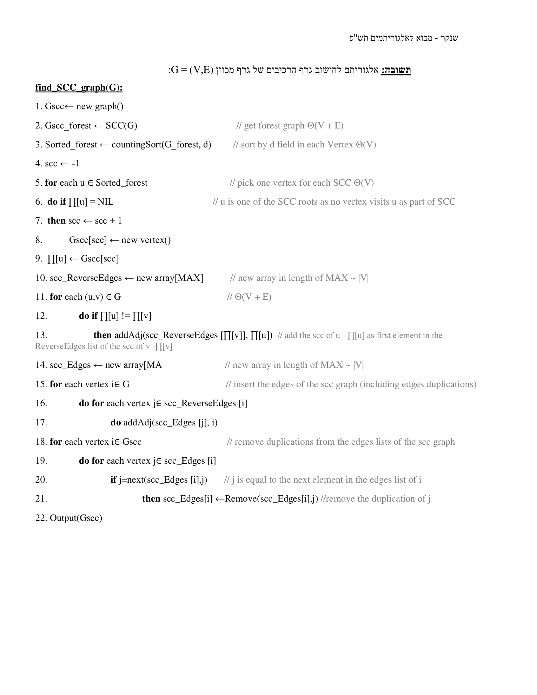
תרגיל בית 1 — שאלה 2: חישוב הגרף המשוחלף GT
תרגיל בית 1 הוא "חזרה על גרפים" כללית, אך שאלה 2 (הטרנספוז) רלוונטית ישירות ל-SCC — כי צעד 2 של האלגוריתם הוא בדיוק בניית GT. שאלה זו היא מהסוג שעלול להופיע במבחן.
שאלה (מילה-במילה):
הגרף המשוחלף (transpose) של גרף מכוון G=(V,E) הוא הגרף GT=(V, ET) כאשר ET = {(v,u) ∈ V×V | (u,v) ∈ E}. תארו אלגוריתמים יעילים לחישוב GT בהינתן G, הן עבור ייצוג G על ידי מטריצת שכנויות והן על ידי הייצוג המעורב (מערך של מצביעים לרשימות השכנים). נתחו את זמני הריצה.
ייצוג מטריצת שכנויות (sol-hw-1.pdf עמ' 4, מילה-במילה):
ComputeTranspose(G) // ייצוג מטריצה 1. G^T ← int[MAX][MAX] // Create new Graph 2. for i ← 1 to N // init to empty graph, zeros in every cell Θ(N^2) 3. do for j ← 1 to N 4. do G^T[i,j] = 0 5. for i ← 1 to N 6. do for j ← 1 to N 7. do if G[i,j] = 1 // there is edge in G between vertex i and vertex j 8. then G^T[j,i] = 1 // there is edge in G^T between vertex j and vertex i
עלות זמן: Θ(N²). עלות מקום: Θ(N²).
ייצוג מעורב / רשימות שכנויות (sol-hw-1.pdf עמ' 5, מילה-במילה):
ComputeTranspose(G) // ייצוג מעורב (רשימות) 1. G^T ← Edge*[MAX] // Create new Graph 2. for i ← 1 to N // init empty: head Edge in every cell 3. do G^T[i] = new Edge() 4. for u ← 0 to N 5. p ← G[u].next 6. while p != NULL 7. v ← p.value // edge (u,v) exist in G 8. temp ← G^T[v].next // save previous V's adj list 9. G^T[v].next ← new Edge(u) // create edge (v,u) in G^T as first in V's list 10. G^T[v].next.next ← temp // reconnect previous list after new head 11. p ← p.next
עלות זמן: Θ(|V| + |E|). עלות מקום: Θ(N + |E|).
הסבר מודרך: במטריצת שכנויות חייבים לגעת בכל N² התאים (גם כדי לאתחל לאפסים), ולכן Θ(N²) בלתי-נמנע. ברשימות שכנויות עוברים על כל קדקוד ועל כל קשת בדיוק פעם אחת: עבור כל קשת (u,v) ב-G מוסיפים את (v,u) בראש רשימת השכנים של v ב-GT (הכנסה ב-O(1)) — סה"כ Θ(|V|+|E|). זו הסיבה שהאלגוריתם המלא של SCC משיג Θ(|V|+|E|) רק כאשר משתמשים בייצוג רשימות (הטרנספוז לא הופך לצוואר בקבוק).
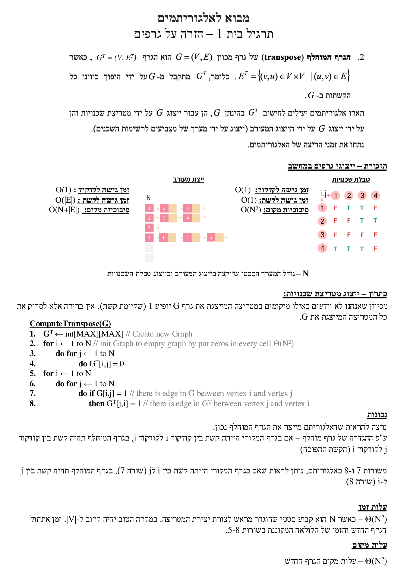
מקור: lec-scc.pdf (עמ' 9–21), exercise-scc.pdf, sol-exercise-scc.pdf (עמ' 1–5), hw-1.pdf, sol-hw-1.pdf (עמ' 4–5)
10. בדיקה עצמית
בטרייס של ההרצאה, מהו הקדקוד שממנו מתחיל ה-DFS השני (על GT)?
מהי סיבוכיות הזמן הכוללת של אלגוריתם SCC(G) שנלמד (עם ייצוג רשימות שכנויות)?
פרופ' דיוור מציע להריץ את ה-DFS השני על הגרף המקורי (לא על GT) בסדר f עולה. מדוע הוא טועה?
כיצד יכולה הוספת קשת אחת לגרף לשנות את מספר הרכיבים הקשירים היטב?
בהוכחת הנכונות ידוע ש-u⤳t ב-G ושׁ-f[t]>f[u]. איזו מבין 4 אפשרויות מבנה הסוגריים נשארת, ומה נובע ממנה?